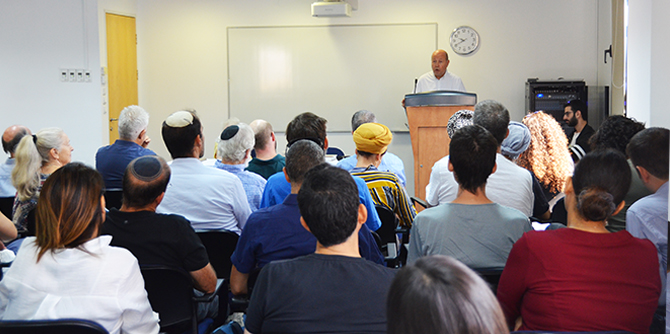

At the start of September, 22 new fellows of Cohort 28 began their two-year program of studies at the Mandel School for Educational Leadership, alongside the 20 continuing fellows of Cohort 27. “In the coming year, may we all be driven by a passion for action, so that we may engage in significant and valuable processes of learning and development,” said Danny Bar Giora, director of the Mandel School for Educational Leadership, in his welcoming address to the two cohorts. “It is almost impossible to run a program that will suit each and every one of the 42 fellows here, who come from very different and diverse professional and academic fields, and who will go on to hold a wide range of positions after their studies," he continued. "Despite this, we make every possible effort to adapt ourselves to the needs of every fellow and of every cohort, as their needs change over time.”
Concluding his speech, Danny thanked
Mr. Morton Mandel, chairman of the Mandel Foundation,
Professor Jehuda Reinharz, president of the Foundation, and
Mr. Moshe Vigdor, director general of the Mandel Foundation–Israel.

“We have great expectations of you for the future,” said Moshe Vigdor. “We expect that that each of you will go back out into the field in your areas of expertise, will fulfill the goals of the Mandel Foundation, and will lead change that will bring about a more just, inclusive, and tolerant society and will improve the quality of life in Israel.”
The opening day of studies at the Mandel School began with a conversation about leadership between Professor Alice Shalvi – one of the pioneers of feminism in Israel and the founder and first principal of the Pelech experimental high school in Jerusalem – and Malka Puterkovsky, a visiting faculty member at the Mandel Leadership Institute who studied and taught at Pelech. Their discussion focused on female leadership in general, and groundbreaking leadership in particular.
“If you have a dream and an idea that you feel is important, be prepared – at any moment – to take on a new role that you have never imagined filling,” said Professor Shalvi. “There is no way to realize an ideal without encountering difficulties," she continued. "I think that you, as education professionals, need to understand how important education is for our society. You need to recognize the extent to which what students receive at school from their teachers – not necessarily openly and overtly, not what is written on the board, but rather what the students receive from their teachers’ personalities – is far more important and influential than what they receive in terms of knowledge.”
Each year, the Mandel School for Educational Leadership accepts approximately 20 fellows with proven management skills, strong intellectual capabilities, and the commitment to lead change for the better in Israeli society and education. Studies at the School, which is a joint venture of the Mandel Foundation and Israel's Ministry of Education, last for two years, during which the fellows develop their personal and professional visions, while deepening and broadening their professional knowledge and translating it into a sustainable action plan that will make a significant contribution to education and society in Israel.
{kind=link}
{kind=link}